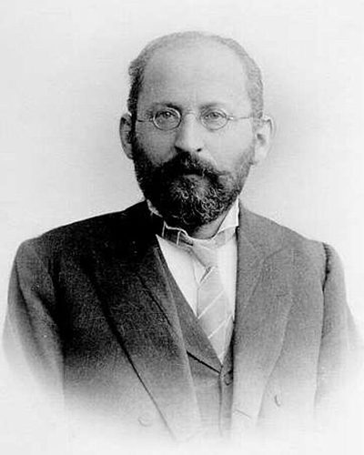

Ideologies / Left
What is Social Democracy?
Social Democracy is a political ideology in the Left family. Bernstein argued that capitalism was not heading for collapse, so socialists should pursue steady reform through parliament, unions and cooperatives instead of revolution. Democracy is both the means and the end. Socialism becomes the gradual extension of rights and security to everyone.
The movement is everything, the final goal is nothing.
Defined from: Eduard Bernstein, Evolutionary Socialism (1899)
See how close you are to Social Democracy Dare a friend to answer as one

.jpg){kind=link}
Where Social Democracy stands on 13 axes
Each axis runs from 0 to 100. A score of 50 is the middle. On a classic compass it sits in the Libertarian Left quadrant.
| Axis | Position | Score | In words |
|---|---|---|---|
| EconomyMarket to Planned | 60 | Leans Planned | |
| OwnershipPrivate to Collective | 55 | Balanced | |
| RightsLiberty to Security | 35 | Leans Liberty | |
| GovernmentDemocracy to Autocracy | 10 | Very strongly Democracy | |
| StructureDecentralised to Centralised | 60 | Leans Centralised | |
| NationInternationalist to Nationalist | 35 | Leans Internationalist | |
| ImmigrationMulticulturalist to Assimilationist | 30 | Strongly Multiculturalist | |
| ValuesProgressive to Traditional | 30 | Strongly Progressive | |
| TechnologyAccelerationist to Precautionary | 35 | Leans Accelerationist | |
| EnvironmentIndustrialist to Environmentalist | 50 | Balanced | |
| ReligionSecular to Religious | 20 | Strongly Secular | |
| MilitaryPacifist to Militarist | 30 | Strongly Pacifist | |
| TradeFree Trade to Protectionist | 40 | Leans Free Trade |
Ideologies closest to Social Democracy
- Democratic Socialism89% alike
- Ethical Socialism89% alike
- Keynesian Liberalism88% alike
- Market Socialism88% alike
- Eurocommunism88% alike
Its opposite on this map is Juche, at 34%.
Parties near Social Democracy
Social Democratic Party of 1959 (Germany) was the first party or movement to carry it, placed here from The Godesberg Programme (1959).
- French Popular FrontFrance. Programme of the Rassemblement Populaire (1936)91% alike
- Social Democratic Party of AustriaAustria. Mit Herz und Hirn (2024)90% alike
- Social Democratic Party of GermanyGermany. Hamburg Programme (2007)90% alike
- New Zealand Labour PartyNew Zealand. What Better Means for New Zealand (2026)89% alike
Common questions
What is Social Democracy?
Social Democracy is a political ideology in the Left family. Bernstein argued that capitalism was not heading for collapse, so socialists should pursue steady reform through parliament, unions and cooperatives instead of revolution. Democracy is both the means and the end. Socialism becomes the gradual extension of rights and security to everyone.
What does Social Democracy believe?
In one line: The movement is everything, the final goal is nothing. Its strongest positions are Democracy, Secular, Multiculturalist. Bernstein argued that capitalism was not heading for collapse, so socialists should pursue steady reform through parliament, unions and cooperatives instead of revolution. Democracy is both the means and the end. Socialism becomes the gradual extension of rights and security to everyone.
Who founded Social Democracy?
Social Democracy is defined here from Evolutionary Socialism (1899) by Eduard Bernstein. The thinker most tied to it is Eduard Bernstein (1850 to 1932).
Is Social Democracy left wing or right wing?
On a classic two axis compass Social Democracy falls in the Libertarian Left quadrant, which means the economic left and the libertarian side. Left and right hide a lot, though, which is why EthosScales scores it on thirteen separate axes.
How is Social Democracy different from Democratic Socialism?
They are close: 89% alike. The biggest gaps are on Ownership, where Social Democracy scores 55 and Democratic Socialism scores 75, and Environment, where Social Democracy scores 50 and Democratic Socialism scores 35. On each axis, 0 is one end and 100 is the other.
Think this is wrong? Suggest a correction. The scores are editorial estimates.